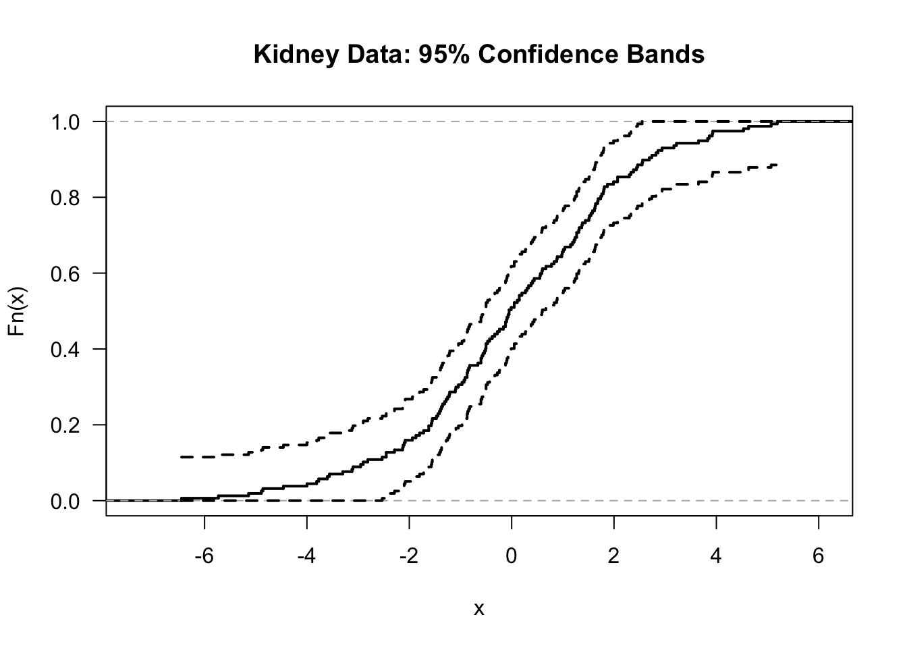

Chapter 7 The Empirical Distribution Function
7.1 Definition and Basic Properties
Every random variable has a cumulative distribution function (cdf).
The cdf of a random variable \(X\) is defined as \[\begin{equation} F(t) = P( X \leq t) \end{equation}\]
The empirical distribution function or empirical cumulative distribution function (ecdf) estimates \(F(t)\) by computing the proportion of observations which are less than or equal to \(t\).
For i.i.d. random variables \(X_{1}, \ldots, X_{n}\) with cdf \(F\), the empirical distribution function is defined as \[\begin{equation} \hat{F}_{n}(t) = \frac{1}{n}\sum_{i=1}^{n} I( X_{i} \leq t) \nonumber \end{equation}\]
Note that the empirical distribution function can be computed for any type of data without making any assumptions about the distribution from which the data arose.
The only assumption we are making is that \(X_{1}, \ldots, X_{n}\) constitute an i.i.d. sample from some common distribution function \(F\).
- For example, if we observed \(X_{1} = 0.7\), \(X_{2} = 0.2\), and \(X_{3} = 1.3\), the corresponding empirical distribution function would be \[\begin{equation} \hat{F}_{3}(t) = \begin{cases} 0 & \textrm{ for } t < 0.2 \\ 1/3 & \textrm{ for } 0.2 \leq t < 0.7 \\ 2/3 & \textrm{ for } 0.7 \leq t < 1.3 \\ 1 & \textrm{ for } t \geq 1.3 \end{cases} \end{equation}\]

7.2 Confidence intervals for F(t)
For a fixed value of \(t\), the distribution of \(n\hat{F}_{n}(t)\) is \[\begin{equation} n \hat{F}_{n}(t) \sim \textrm{Binomial}\big( n, F(t) \big) \end{equation}\]
This is because, for a fixed \(t\), \(n\hat{F}_{n}(t)\) is the sum of \(n\) independent Bernoulli random variables \(W_{1}^{t}, \ldots, W_{n}^{t}\) \[\begin{equation} n \hat{F}_{n}(t) = \sum_{i=1}^{n} W_{i}^{t} = \sum_{i=1}^{n} I( X_{i} \leq t) \end{equation}\]
The probability that \(W_{i}^{t} = 1\) is \[\begin{equation} P( W_{i}^{t} = 1) = P(X_{i} \leq t) = F(t) \nonumber \end{equation}\]
Pointwise Confidence Intervals
Because \(\hat{F}_{n}(t)\) is a mean of independent random variables, we can say that \[\begin{equation} \frac{ \sqrt{n}\Big( \hat{F}_{n}(t) - F(t) \Big) }{\sqrt{ \hat{F}_{n}(t)(1 - \hat{F}_{n}(t))}} \longrightarrow \textrm{Normal}\Big(0, 1 \Big) \nonumber \end{equation}\]
The above asymptotic statement is the basis for constructing pointwise confidence intervals for \(F(t)\).
For a fixed \(t\), a \(100 \times (1-\alpha)\%\) confidence interval for \(F(t)\) is the following \[\begin{eqnarray} CI_{\alpha}^{pw}(t) &=& [L_{\alpha}^{pw}(t), U_{\alpha}^{pw}(t)] \nonumber \\ L_{\alpha}^{pw}(t) &=& \max\Bigg\{\hat{F}_{n}(t) - z_{1 - \alpha/2} \sqrt{ \frac{\hat{F}_{n}(t)(1 - \hat{F}_{n}(t)) }{n} }, 0 \Bigg\} \nonumber \\ U_{\alpha}^{pw}(t) &=& \min\Bigg\{ \hat{F}_{n}(t) + z_{1 - \alpha/2} \sqrt{ \frac{\hat{F}_{n}(t)(1 - \hat{F}_{n}(t)) }{n} }, 1 \Bigg\} \tag{7.1} \end{eqnarray}\]
Plotting \(CI_{\alpha}^{pw}(t)\) for different values of \(t\), would give pointwise confidence intervals for the distribution function. Plotting pointwise confidence intervals for \(F(t)\) or for survival functions \(S(t) = 1 - F(t)\) is fairly common in practice.
However, these pointwise confidence intervals only hold for each point separately.
Simultaneous Confidence Bands
Simultaneous confidence bands can be thought of as two functions \(L_{\alpha}^{band}(t)\) and \(U_{\alpha}^{band}(t)\) such that we are “\(100 \times (1 - \alpha)\)% confident” that all of \(F(t)\) is contained within the bands \(L_{\alpha}^{band}(t)\) and \(U_{\alpha}^{band}(t)\).
Specifically, we want the statement \[\begin{equation} L_{\alpha}^{band}(t) \leq F(t) \leq U_{\alpha}^{band}(t) \quad \textrm{ for all } t \end{equation}\] to hold with at least \(1 - \alpha\) probability.
In other words, we want less than \(\alpha\) probability for any part of the path of \(F(t)\) going outside of the bands.
One choice of \(L_{\alpha}^{band}(t)\) and \(U_{\alpha}^{band}(t)\) which has this property is the following \[\begin{equation} L_{\alpha}^{band}(t) = \max\{\hat{F}_{n}(t) - \delta_{\alpha,n}, 0 \} \qquad U_{\alpha}^{band}(t) = \min\{\hat{F}_{n}(t) + \delta_{\alpha,n}, 1 \}, \tag{7.2} \end{equation}\] where \(\delta_{\alpha,n}\) is given by \[\begin{equation} \delta_{\alpha, n} = \sqrt{\frac{1}{2n} \ln\Big(\frac{2}{\alpha} \Big)} \nonumber \end{equation}\]
The reason this choice of confidence band works is the Dvoretzky-Kiefer-Wolfowitz (DKW) inequality. The DKW inequality states that \[\begin{equation} P\Bigg( \sup_{t} |F(t) - \hat{F}_{n}(t) | > \varepsilon \Bigg) \leq 2 e^{-2n \varepsilon^{2}} \nonumber \end{equation}\]
Our choice of confidence bands (7.2) then works because \[\begin{equation} \sup_{t} | F(t) - \hat{F}_{n}(t)| \leq \delta_{\alpha, n} \nonumber \end{equation}\] is equivalent to \[\begin{equation} L_{\alpha}^{band}(t) \leq F(t) \leq U_{\alpha}^{band}(t) \qquad \textrm{for all } t \nonumber \end{equation}\]
Then, from the DKW inequality we have \[\begin{eqnarray} P\Bigg( L_{\alpha}^{band}(t) \leq F(t) \leq U_{\alpha}^{band}(t) \quad \textrm{for all } t \Bigg) &=& P\Bigg( \sup_{t} | F(t) - \hat{F}_{n}(t)| \leq \delta_{n, \alpha} \Bigg) \nonumber \\ &\geq& 1 - 2 e^{-2n \delta_{\alpha,n}^{2}} \nonumber \\ &=& 1 - \alpha. \nonumber \end{eqnarray}\]
Confidence bands will almost always be wider than the pointwise confidence intervals.
This extra width is due to the fact that we are requiring the coverage probability to hold for the entire path of \(F(t)\) rather than at just a single point.
7.3 The Empirical Distribution Function in R
We will see how to work with empirical distribution functions in R by using data from a study on kidney function.
This dataset has \(157\) observations which has the age of each study participant and a measure of overall kidney function. The data can be obtained at https://web.stanford.edu/~hastie/CASI_files/DATA/kidney.txt
We will only look at the tot variable in this chapter.
kidney <- read.table("https://web.stanford.edu/~hastie/CASI_files/DATA/kidney.txt",
header=TRUE)
head(kidney)## age tot
## 1 18 2.44
## 2 19 3.86
## 3 19 -1.22
## 4 20 2.30
## 5 21 0.98
## 6 21 -0.50The ecdf function is the main function which computes the empirical distribution function in R
The ecdf function will create an ecdf object. To create an ecdf object for the kidney totals, use the following code:
- You can plot the ecdf for the kidney totals by just calling plot(ecdf)

- If you don’t like the look of the points in the ecdf plot, you can use add the argument do.points = FALSE when calling plot. Also, you can add the argument verticals =TRUE if you want the plot to draw vertical lines whenever there is a jump in the empirical distribution function.
plot(kidney.Fhat, do.points=FALSE, verticals=TRUE, main = "Kidney Data:
ecdf with vertical lines and without points", las=1, lwd=2)
- A nice feature of of the ecdf function is that ecdf object can be treated as a function which computes the empirical distribution function. For example,
## [1] 0.5095541## [1] 0.3057325 0.6560510 0.9745223R does not plot confidence intervals when plotting the empirical distribution function.
We can do this ourselves, by using the pointwise confidence interval formula shown in (7.1)
## 1. First, we will compute the standard errors at each of the
## observed time points
tt <- sort(unique(kidney$tot))
std.err <- sqrt(kidney.Fhat(tt)*(1 - kidney.Fhat(tt))/ length(kidney$tot))
## 2. Now, compute the confidence intervals at each time point
ci.low <- pmax(kidney.Fhat(tt) - qnorm(.975)*std.err, 0)
ci.upper <- pmin(kidney.Fhat(tt) + qnorm(.975)*std.err, 1)
## 3. Now, plot the results. Note that type="s" in the lines function produces
## "step functions" which pass through the provided points.
plot(kidney.Fhat, do.points=FALSE, verticals=TRUE, main = "Kidney Data:
95% pointwise confidence intervals", las=1, lwd=2)
lines(tt, ci.low, type="s", lty=2, lwd=2)
lines(tt, ci.upper, type="s", lty=2, lwd=2)
- We could plot the confidence bands as well.
n <- length(kidney$tot)
## Compute the confidence bands at each time point
ci.band.low <- pmax(kidney.Fhat(tt) - sqrt(log(2/0.05)/(2*n)), 0)
ci.band.upper <- pmin(kidney.Fhat(tt) + sqrt(log(2/0.05)/(2*n)), 1)
plot(kidney.Fhat, do.points=FALSE, verticals=TRUE,
main = "Kidney Data: 95% Confidence Bands", las=1, lwd=2)
lines(tt, ci.band.low, type="s", lty=2, lwd=2)
lines(tt, ci.band.upper, type="s", lty=2, lwd=2)
- Comparing the pointwise confidence intervals and the simultaneous confidence bands in the same plot shows how much wider the confidence bands are:

7.4 The Kolmogorov-Smirnov Test
The one-sample Kolmogorov-Smirnov (KS) test is a type of goodness-of-fit test that is based on the empirical distribution function.
The KS test will test whether or not our data \(X_{1}, \ldots, X_{n}\) comes from a specific distribution of interest \(F_{0}\).
Supposing our data \(X_{1}, \ldots, X_{n}\) are an i.i.d. sample with distribution function \(F\), the hypothesis test of interest can be stated as \[\begin{equation} H_{0}: F = F_{0} \quad \textrm{ vs. } \quad H_{A}: F \neq F_{0} \end{equation}\]
The one-sample KS test could be used, for example, as a test of normality.
The one-sample Kolmogorov-Smirnov test statistic \(KS_{n}^{(1)}\) looks at the maximum distance between the empirical distribution function and \(F_{0}\) \[\begin{equation} KS_{n}^{(1)} = \sup_{t} \big| \hat{F}_{n}(t) - F_{0}(t) \big| \nonumber \end{equation}\]
Large values of \(KS_{n}^{(1)}\) provide evidence againts the null hypothesis.
Under \(H_{0}\), \(\sqrt{n}KS_{n}^{(1)}\) converges in distribution to a Kolmogorov distribution as \(n\) goes to infinity.
The Kolmogorov distribution has the following cumulative distribution function: \[\begin{equation} F_{Kolmo}(t) = 1 - 2\sum_{j=1}^{\infty} (-1)^{(j+1)} e^{-2j^{2}t^{2}} \nonumber \end{equation}\]
The one-sample KS test can be performed in R using the ks.test function. For one-sample tests, you have to provide the “name” of the distribution function that you are choosing for \(F_{0}\).
xx <- rt(100, df=2) ## generate 100 observations from a t-dist with 2 d.f.
ks.test(xx, y="pnorm") ## test that these data follow Normal(0, 1)##
## One-sample Kolmogorov-Smirnov test
##
## data: xx
## D = 0.093446, p-value = 0.3469
## alternative hypothesis: two-sided- You can even test that the data follow some other \(\textrm{Normal}(\mu, \sigma^{2})\) by just providing mean and sd arguments.
##
## One-sample Kolmogorov-Smirnov test
##
## data: xx
## D = 0.31504, p-value = 4.792e-09
## alternative hypothesis: two-sidedSuppose we have data from two groups: \(X_{1}, \ldots, X_{n} \sim F_{X}\) and \(Y_{1}, \ldots, Y_{m} \sim F_{Y}\). The two-sample KS test performs a test of the following hypothesis \[\begin{equation} H_{0}: F_{X} = F_{Y} \quad \textrm{vs.} \quad H_{A}: F_{X} \neq F_{Y}. \nonumber \end{equation}\]
In this case, we are only testing whether the distributions of the two groups are different. We are not testing whether observations from group 1 tend to be larger (or smaller) than those from group 2.
The two-sample KS test compares the empirical distribution functions from these two groups.
The two-sample KS test statistic is defined as the maximum distance between the two empirical distribution functions: \[\begin{equation} KS_{n,m}^{(2)} = \sup_{t} \big| \hat{F}_{n,X}(t) - \hat{F}_{m,Y}(t) \big| \nonumber \end{equation}\] Here, \(\hat{F}_{n,X}(t) = \frac{1}{n}\sum_{i=1}^{n} I(X_{i} \leq t)\) and \(\hat{F}_{m,Y}(t) = \frac{1}{m}\sum_{j=1}^{m} I(Y_{j} \leq t)\) denote the empirical distribution functions from the X and Y samples.
The two-sample KS test statistic also converges to the same limit as the one-sample KS test statistic. In particular, under \(H_{0}\): \[\begin{equation} \sqrt{ \frac{nm}{n + m } }KS_{n,m}^{(2)} \longrightarrow \textrm{Kolmogorov} \qquad \textrm{ as } n,m \longrightarrow \infty \nonumber \end{equation}\]
- The ks.test function in R also performs two-sample KS tests.
##
## Two-sample Kolmogorov-Smirnov test
##
## data: xx and yy
## D = 0.17, p-value = 0.1111
## alternative hypothesis: two-sided- We can compute the KS statistic ourselves and check that this matches the value of the KS statistic returned by the ks.test function:
zz <- c(xx, yy)
zz.order <- sort(zz)
F.x <- ecdf(xx)
F.y <- ecdf(yy)
KS.stat <- max( abs( F.x(zz.order) - F.y(zz.order) ) )
KS.stat## [1] 0.17- Exercise 7.1. Why does \[\begin{equation} KS_{n,m}^{(2)} = \max_{1 \leq i \leq n+m} \big| \hat{F}_{n,X}(Z_{(i)}) - \hat{F}_{n,Y}(Z_{(i)}) \big|, \nonumber \end{equation}\] where \(\mathbf{Z} = (Z_{1}, \ldots, Z_{n+m})\) denotes the pooled sample and \(Z_{(1)}, \ldots, Z_{(n+m)}\) denote the order statistics from \(\mathbf{Z}\)?
7.5 The empirical distribution function and statistical functionals
In many areas of mathematics, it is common to refer to a function which is a “functions of functions” as a functional.
For example, \(T(f)\) which is defined as \[\begin{equation} T(f) = \int_{0}^{1} f^{2}(x) dx \end{equation}\] is a functional because \(T(f)\) takes arguments which are functions and outputs real numbers.
Many common parameters that we encounter in statistics can be thought of as functionals where the input of the functional is usually a distribution function.
For example, the mean is an example of a functional \[\begin{equation} \mu(F) = \int x dF(x) = \int x f(x) dx \nonumber \end{equation}\] As indicated by the notation \(\mu(F)\), the value of the mean depends on the underlying distribution function \(F\).
Also, the variance is an example of a functional \[\begin{equation} \sigma^{2}(F) = \int (x - \mu(F))^{2} dF(x) = \int x^{2} dF(x) - \mu^{2}(F) \nonumber \end{equation}\]
The median is an example of a functional \[\begin{equation} \textrm{med}(F) = F^{-1}(1/2) \nonumber \end{equation}\]
The tail probability \(P(X_{i} > c)\) is also a functional \[\begin{equation} \theta_{c}(F) = \int I(x > c) dF(x) \nonumber \end{equation}\]
Many common estimators can be thought of as coming from “plugging in” the empirical cdf into the appropriate statistical functional.
For example, plugging in the empirical cdf into the mean functional gives: \[\begin{equation} \mu( \hat{F}_{n} ) = \int x d\hat{F}_{n}(x) = \frac{1}{n}\sum_{i=1}^{n} X_{i} = \bar{X} \nonumber \end{equation}\]
Plugging in the empirical cdf into the tail probability functional gives \[\begin{equation} \theta_{c}( \hat{F}_{n} ) = \int I(x > c) d\hat{F}_{n}(x) = \frac{1}{n}\sum_{i=1}^{n}I(X_{i} > c) = 1 - \hat{F}_{n}(c) \nonumber \end{equation}\]
The sample variance is not quite a plug-in estimate for \(\sigma^{2}(F)\) but it is very close \[\begin{eqnarray} \sigma^{2}(\hat{F}_{n}) &=& \int x^{2} d\hat{F}_{n}(x) - \mu^{2}(\hat{F}_{n}) = \frac{1}{n} \sum_{i=1}^{n} X_{i}^{2} - \bar{X}^{2} \nonumber \\ &=& \frac{1}{n} \sum_{i=1}^{n} (X_{i} - \bar{X})^{2} = \frac{n-1}{n} \hat{\sigma}^{2} \nonumber \end{eqnarray}\]
This notation for statistical functionals will be useful when we discuss the bootstrap later in the course.
The notation for statistical functionals is also very useful in the context of influence functions and robust statistics, but we will not discuss these topics in this course.
7.6 Additional Reading
- Additional reading which covers the material discussed in this chapter includes:
- Chapter 2 from Wasserman (2006)
References
Wasserman, Larry. 2006. All of Nonparametric Statistics. Springer Science & Business Media.